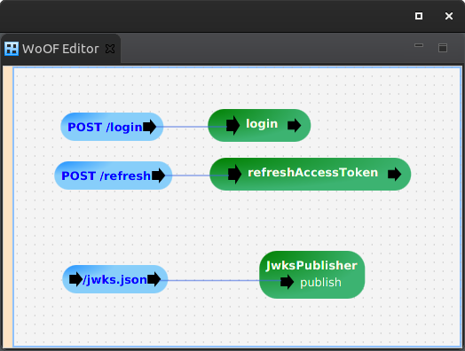

This tutorial demonstrates providing a JWT authority server.
The example used in this tutorial has the end points:
The configuration is the following:
with the following objects:
<objects> <managed-object source="net.officefloor.web.jwt.authority.JwtAuthorityManagedObjectSource"> <property name="identity.class" value="net.officefloor.tutorial.jwtauthorityhttpserver.Identity" /> </managed-object> <managed-object source="net.officefloor.tutorial.jwtauthorityhttpserver.InMemoryJwtAuthorityRepositoryManagedObjectSource" /> </objects>
As per the objects above, the JwtAuthorityManagedObjectSource provides the JwtAuthority. This provides the necessary means for creating and refreshing the tokens for a JWT authority server.
This requires persisting the keys and depends on a JwtAuthorityRepository to provide this persistence. This allows a cluster of JWT authority servers sharing the same persistent storage of keys.
Login is specific to the JWT authentication server. It can use it's own store of credentials. It may use third party Open ID servers. Once authenticated, then the tokens may be created:
public static final String REFRESH_TOKEN_COOKIE_NAME = "RefreshToken";
@Data
@HttpObject
@RequiredArgsConstructor
@AllArgsConstructor
public static class Credentials {
private String username;
private String password;
}
@Data
@HttpObject
@AllArgsConstructor
@RequiredArgsConstructor
public static class Token {
private String token;
}
public void login(Credentials credentials, JwtAuthority<Identity> authority, ObjectResponse<Token> response,
ServerHttpConnection connection) {
// Mock authentication
// (production solution would restrict tries and check appropriate user store)
// (or use potential OpenId third party login)
if ((credentials.getUsername() == null) || (!credentials.getUsername().equals(credentials.getPassword()))) {
throw new HttpException(HttpStatus.UNAUTHORIZED);
}
// Create the refresh token from identity
Identity identity = new Identity(credentials.username);
RefreshToken refreshToken = authority.createRefreshToken(identity);
// Provide refresh token
connection.getResponse().getCookies().setCookie(REFRESH_TOKEN_COOKIE_NAME, refreshToken.getToken())
.setHttpOnly(true).setSecure(true).setExpires(Instant.ofEpochSecond(refreshToken.getExpireTime()));
// Create the access token
Claims claims = createClaims(credentials.username);
AccessToken accessToken = authority.createAccessToken(claims);
// Send response
response.send(new Token(accessToken.getToken()));
}
private static Claims createClaims(String username) {
// Mock claims
// (claim information should be pulled from user store)
String[] roles = new String[] { "tutorial" };
// Provide random value (so access tokens are different)
// (not necessary but due to speed of tests, gets same access token)
int randomValue = ThreadLocalRandom.current().nextInt();
// Return the claims
return new Claims(username, randomValue, roles);
}
Access tokens, as per JWT, should be short lived. Refresh tokens maintain the length of the session for the user. Using a refresh token, access tokens can be obtained until the refresh token expires:
public void refreshAccessToken(ServerHttpConnection connection, JwtAuthority<Identity> authority,
ObjectResponse<Token> response) {
// Obtain the refresh token
HttpRequestCookie cookie = connection.getRequest().getCookies().getCookie(REFRESH_TOKEN_COOKIE_NAME);
if (cookie == null) {
throw new HttpException(HttpStatus.UNAUTHORIZED);
}
String refreshToken = cookie.getValue();
// Obtain the identity from refresh token
Identity identity = authority.decodeRefreshToken(refreshToken);
// Create a new access token
Claims claims = createClaims(identity.getId());
AccessToken accessToken = authority.createAccessToken(claims);
// Send refreshed access token
response.send(new Token(accessToken.getToken()));
}
Once the refresh token is expired, the user is likely required to re-authenticate. However, this again is application specific, as refresh tokens may be recreated also.
RFC 7517 defines a format for publishing keys. The tutorial uses the default JwksPublishSectionSource that adheres to this format to publish keys.
The following shows the ease of using the JWT authority:
public class JwtAuthorityHttpServerTest {
@RegisterExtension
public MockWoofServerExtension server = new MockWoofServerExtension();
private String refreshToken;
private String accessToken;
@Test
public void login() throws Exception {
// Undertake login
Credentials credentials = new Credentials("daniel", "daniel");
MockWoofResponse response = this.server
.send(MockWoofServer.mockJsonRequest(HttpMethod.POST, "/login", credentials).secure(true));
assertEquals(200, response.getStatus().getStatusCode(), "Should be successful");
// Extract the refresh token
WritableHttpCookie cookie = response.getCookie(JwtTokens.REFRESH_TOKEN_COOKIE_NAME);
assertNotNull(cookie, "Should have refresh token");
// Extract the access token
Token accessToken = response.getJson(200, Token.class);
assertNotNull(accessToken.getToken(), "Should have access token");
// Capture for other tests
this.refreshToken = cookie.getValue();
this.accessToken = accessToken.getToken();
}
@Test
public void refreshAccessToken() throws Exception {
// Undertake login to obtain refresh token
this.login();
// Attempt to obtain access token without refresh token
MockWoofResponse response = this.server
.send(MockWoofServer.mockRequest("/refresh").secure(true).method(HttpMethod.POST));
assertEquals(401, response.getStatus().getStatusCode(), "Should not be authorised");
// Obtain new access token with refresh token
response = this.server.send(MockWoofServer.mockRequest("/refresh").secure(true).method(HttpMethod.POST)
.cookie(JwtTokens.REFRESH_TOKEN_COOKIE_NAME, this.refreshToken));
assertEquals(200, response.getStatus().getStatusCode(), "Should be successful");
// Extract the access token
Token token = response.getJson(200, Token.class);
assertNotNull(token.getToken(), "Should have access token");
assertNotEquals(this.accessToken, token.getToken(), "Should be new access token");
}
@Test
public void jwksPublishing() throws Exception {
// Publish keys via JWKS
MockWoofResponse response = this.server.send(MockWoofServer.mockRequest("/jwks.json").secure(true));
// Should have two keys available (one active and one in future rotation)
JwksKeys keys = response.getJson(200, JwksKeys.class);
assertEquals(2, keys.getKeys().size(), "Incorrect number of keys");
}
@Data
public static class JwksKeys {
private List<RsaJwksKey> keys;
}
@Data
public static class RsaJwksKey {
// As per RFC 7517 for RSA public key
private String kty;
private String n;
private String e;
// Additional to allow rotating keys
private Long nbf; // epoch start time in seconds
private Long exp; // epoch expire time in seconds
}
}
The next tutorial covers combining JWT security and JWT authority server together for smaller applications.